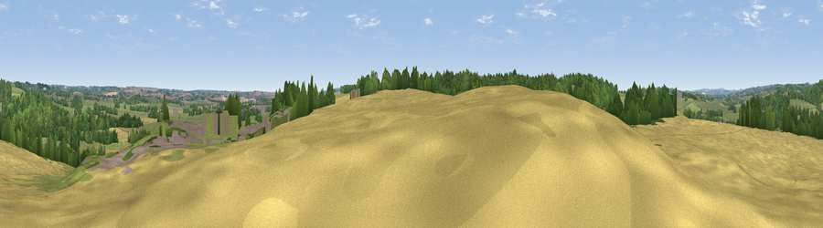

Viewpoint near Salt
#38277 in England · top 69% of its area beats it · near Salt · access?Where it is
The exact computed spot (SJ 96125 27275). Click the marker for map links.
Public access: no public right of way or access land is recorded at this exact spot — it may be on private land. Computed from Natural England's CRoW access layer and OpenStreetMap rights of way — not the legal definitive map. Always verify locally.
The view, rendered

A 360° render of this exact spot computed from the terrain model, tree cover and land cover — summer colours, afternoon light, calibrated against photographs of famous viewpoints. Real trees, hedges and buildings will differ in detail.
The panorama
Grey silhouette: terrain skyline in each direction (720 bearings, Earth curvature and refraction included). Dashed green: skyline with trees (+15 m) and buildings (+8 m) as obstacles. Blue strip: how far the ground is visible on each bearing.
Where the view opens
Wedge length = distance to the farthest visible ground on that bearing (vegetation-aware). Rings at 10, 25 and 50 km.
What fills the view
43% grassland · 30% cropland · 24% woodland · 3% built-up
Angular shares of the visible panorama (visual magnitude), not map area. Landscape diversity 0.51 (0–1 Shannon).
Key numbers
More beautiful places nearby
The staircase of upgrades: each row has a higher view potential than everything closer. Driving times are estimates from straight-line distance, calibrated against real road routing — check an actual route before setting out.
| Place | Direction | Drive | Score |
|---|---|---|---|
| Upper Park | N · 2 km | ~6 min | 36.1 |
| Viewpoint near Hopton | SW · 3 km | ~7 min | 44.6 |
| Viewpoint near Milford | SSE · 7 km | ~14 min | 45.1 |
| Viewpoint near Aston-by-Stone | NNW · 7 km | ~14 min | 50.3 |
| Peasley Bank | WNW · 7 km | ~14 min | 57.2 |
| Stafford Castle | SW · 8 km | ~16 min | 60.6 |
| Viewpoint near Beech | NW · 16 km | ~29 min | 62.9 |
| Viewpoint near Sheriffhales | WSW · 23 km | ~38 min | 63.6 |
52.84297, -2.05897 · source: screening · position refined by local search. Computed location — check access rights before visiting.